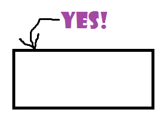

Get Showcard Gothic
Wondering why I don't have showcard gothic on my laptop I found it's because it comes with MS Office, which is not on my laptop.
So I downloaded it from fontzone: showcard-gothic and installed it (TTF file)
And now my MS Paint explanations can have the correct font:

Note: I first checked the file at Virus Total.